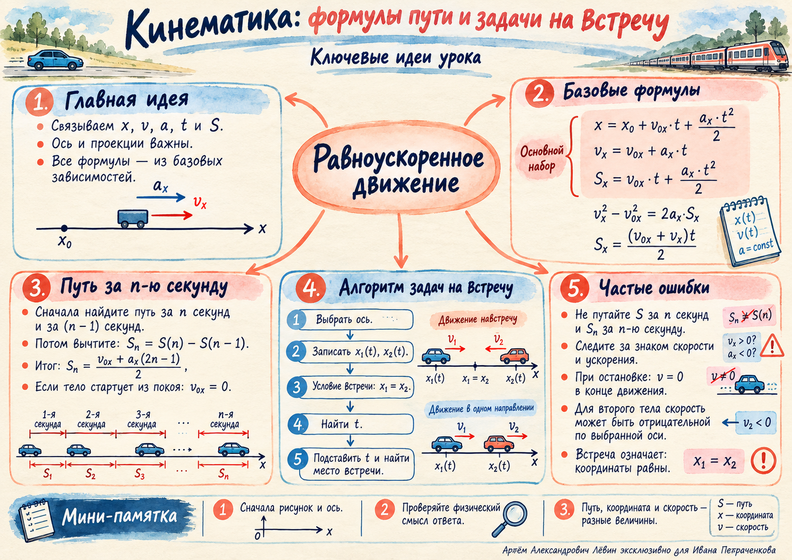

При смене направления S обычно не совпадает с |sx|.
Постер по мотивам занятияПоказать / скрыть
Быстрая визуальная памятка: базовые формулы, путь за n-ю секунду, координатный алгоритм встречи и контроль типичных ошибок.

01 · система знаков
Сначала ось. Потом формула.
Проекции скорости и ускорения могут быть положительными или отрицательными. Знак определяется выбранной осью и направлением соответствующего вектора.
Ускорение и его проекция
ax = const
Контроль торможения
v0x > 0, ax < 0
Контроль. Отрицательная проекция ускорения означает направление против положительного направления оси; это особенно важно в задачах на торможение.
02 · базовая связь
Скорость меняется линейно со временем.
При постоянном ускорении текущая проекция скорости складывается из начальной проекции и изменения скорости за время движения.
Скорость
vx = v0x + axt
03 · положение тела
Координата = начало + перемещение.
Общую формулу полезно записывать до подстановки чисел. Она сразу показывает, какие данные относятся к начальному состоянию, скорости и ускорению.
Координата
x = x0 + v0xt + axt2/2
04 · три рабочие формы
Одна величина — три удобные формулы.
Выбор зависит от того, какие величины уже известны. Это центральный навык: выбирать зависимость с минимумом лишних неизвестных.
Есть время и ускорение
sx = v0xt + axt2/2
Времени нет
sx = (vx2 − v0x2)/(2ax), ax ≠ 0
Ускорение не нужно
sx = (v0x + vx)t/2
05 · формульный навигатор
Что отсутствует в условии?
Выберите ситуацию. Навигатор подсветит форму перемещения, которая соответствует логике занятия.
06 · ключевое различие
«За n секунд» и «за n-ю секунду» — разные вопросы.
Для отдельной секунды вычитают накопленное перемещение к её началу из накопленного перемещения к её концу.
Перемещение за n-ю секунду
sx,n = sx(nΔt) − sx((n−1)Δt)
При равных интервалах Δt: sx,n = v0xΔt + ax(2n−1)(Δt)2/2.
Путь и перемещение. Если направление внутри секунды не меняется, Sn = |sx,n|. При смене знака скорости путь считают по частям.
07 · граничное состояние
Остановка задаётся скоростью, равной нулю.
Факт остановки — дополнительное уравнение, которое необходимо использовать в соответствующих задачах.
В момент остановки
vx = 0
Время остановки
tост = −v0x/ax
Контроль знака. При v0x > 0 физическое tост > 0 получается при ax < 0.
08 · координатный метод
Встреча означает равенство координат.
Оба тела описываются в одной системе отсчёта. В один и тот же момент их координаты совпадают.
Условие встречи
x1(t) = x2(t)
Равномерное движение
x1=x01+v1xt, x2=x02+v2xt
С ускорением
xi=x0i+v0ixt+aixt2/2
Выберите одну ось.
Зафиксируйте начало отсчёта и положительное направление.
Определите данные каждого тела.
x0, v0x, ax — со знаками.
Запишите x1(t) и x2(t).
Сначала общая формула, затем адаптация под условие.
Приравняйте координаты.
Оставьте физически допустимое время t ≥ 0.
Найдите место встречи.
Подставьте время в любое уравнение координаты.
09 · контроль перед ответом
Главные риски — смысл величин и знаки.
Перед вычислением проверьте ось, проекции и вопрос задачи. После вычисления — единицы и физический смысл.
Для отдельной секунды нужна разность накопленных перемещений.
В торможении при движении вдоль +x обычно ax < 0.
Условие нужно явно использовать.
Координаты должны быть согласованы.
Так сохраняются знаки и физическая логика.